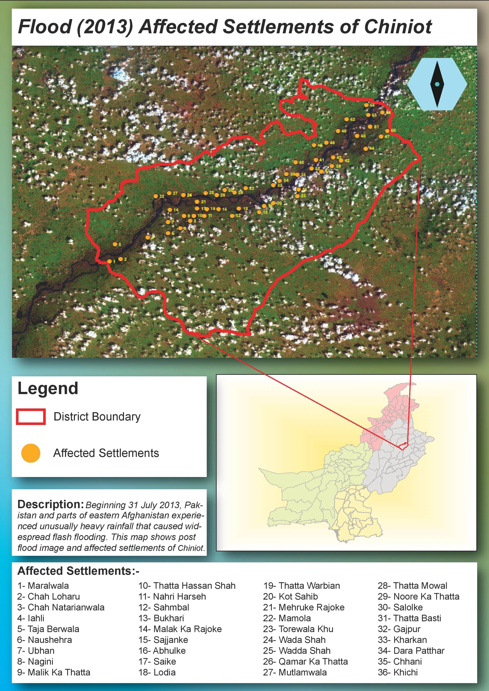

Cartography
Flood affected settlements of Chiniot
I made this layout to give the settlements affected by the 2013 Chiniot flood a clear geographic context. Bringing the named places, district boundary and satellite image together makes the pattern easier to understand than a list of settlement names alone.
- Location
- Chiniot, Pakistan
- Event shown
- 2013 flooding
- Output
- Settlement reference layout
Chiniot settlement map


Yellow points follow the river corridor through Chiniot, with a name index below and a national locator at the right. The points identify affected settlements in the original layout, not levels of damage.
Inspect details: Chiniot settlement mapLocating the affected places
I placed yellow settlement points over the image and used a red outline for the district. Numbered markers link locations to a place name index without covering the river with long labels. A Pakistan inset locates Chiniot for readers unfamiliar with the area.
The settlement pattern becomes visible along the river as it crosses the district. For a field briefing or a followup review, this type of reference could help people locate named communities and agree which places they are discussing.
The information still needed for a response
The points identify settlements, but do not measure water depth, damage or household impacts. Those would need separate evidence before the map could guide response priorities.
The original layout describes the image as a view after the flood but does not provide its acquisition date or a detailed source citation. I retain it here as an earlier settlement mapping example, with the interpretation limited to the locations and event context shown.